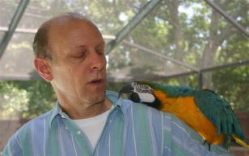

<html>
  
<head>
    <title>DifficultieswithInterspeciesCommunication.html</title>
    <meta name="generator" content="SiteBuilder/2.9.0/1.8.0_45">
    <meta name="author" content="ParrotSpeech.com">
    <meta name="keywords" content="bird speech, macaw speech, interspecies communication, difficulties discerning speech">
    <style type="text/css"><!--
      BODY {font-family:"Times New Roman"; font-size:12;margin:0px;padding:0px;}
      P {font-family:"Times New Roman"; font-size:12;}
      FORM {margin:0;padding:0;}
    --></style>
  </head>
  <body bgcolor="#FFFFFF" background="clipart/backgrounds/tile/textured_white.gif" text="#000000" link="#0000FF" vlink="#800080" topmargin="0" leftmargin="0">

    <div id="root" style="position:absolute;width:775px;height:2912px;">
      <div id="e0" style="position:absolute;left:6;top:5;width:177;height:644;"><!--$navbar 
name=History--Backgroud.nav
assetID=%NavbarAsset:/navigation_bars/History--Backgroud.nav
      <div id="e13" style="position:absolute;left:205;top:36;width:527;height:110;">
        <table border="0" cellspacing="0" cellpadding="0" width="527">
          <tr>
            <td nowrap height="110" align="center" valign="top"><span class="text"><b><font color="#663300" size="6"><span style="font-size:30px;line-height:36px;">Words and Sound:<br>Difficulties with Speech as a Means<br>for Interspecies Communication<br soft></span></font></b></span></td>
          </tr>
        </table>
      </div>
      <div id="e14" style="position:absolute;left:239;top:192;width:535;height:286;"><span class="text"><b><font color="#663300" size="3"><span style="font-size:16px;line-height:19px;">Some possible difficulties in discerning a bird's speech:<br><br>1) rapidity of the bird's speech, as parrots often learn to speak quickly<br>2) tone of the bird's voice, a human voice sounds considerably different<br>3) intonation used in speaking, a bird may put unusual stress on syllables<br>4) the cadence of speech, the pattern could reflect an owner's speech<br>5) &quot;clipped&quot; syllables, are some words incompletely said?<br>6) isolated or contextual speech?<br>7) slurred words? (either indistinct or linked to other words)<br>8) unusual words in the bird's vocabulary<br>9) the listener's inexperience with the dialect of a bird<br>10) lack of common vocabulary between listener and the talking bird?<br>11) insufficient effort on the part of the listener to comprehend the bird's words<br>12) hearing loss, an age-related hearing deficit, in older adults challenges them<br>13) lack of eye contact or visual clues on sound recordings &nbsp;<br soft></span></font></b></span>      </div>
      <div id="e15" style="position:absolute;left:374;top:528;width:397;height:1843;"><span class="text"><b><font face="Comic Sans MS" color="#663300" size="4"><span style="font-size:20px;line-height:28px;">INTERSPECIES COMMUNICATION<br><br></span></font></b><b><font color="#663300" size="3"><span style="font-size:16px;line-height:19px;">There are several problems in receiving messages from a <br soft>talking bird. Part of the problem is reflected by a statement <br soft>about &quot;inattentional deafness&quot; by Temple Grandin in <br soft></span></font></b><b><i><font color="#663300" size="3"><span style="font-size:16px;line-height:19px;">Animals in Translation</span></font></i></b><b><font color="#663300" size="3"><span style="font-size:16px;line-height:19px;">.<br><br>A listener must be interested enough to determine the <br soft>message transmitted by a speaking bird. Since many bird <br soft>owners neither actively listen to their birds nor pay much <br soft>attention to the bird's speech, who then will receive the <br soft>bird's message?<br><br>Many people enjoy hearing a parrot repeat stock phrases. <br soft>However, the novelty wears off soon and then the<br>difficulty becomes apparent; people assume that a bird's <br soft>early speech is not meaningful, but they are often wrong. <br soft>An owner needs to recognize and explore the bird's<br>ability to use language during &quot;a window of opportunity,&quot; <br soft>usually during the bird's early dealings with its owner. <br soft>Future communicative opportunities might be lost,<br>because a bird simply gives up when it receives no <br soft>response. Out of boredom, parrots revert to repeating <br soft>mundane phrases that cause a reaction.<br><br>If you listen to your bird and work with your bird, there is<br>a much higher chance that you will be able to communicate <br soft>at least on occasion. For example, Arielle learned to ask, <br soft>&quot;Hurt?&quot; The word is posed with a rising pitch to indicate <br soft>the questioning nature of the utterance. The full translation <br soft>for her abbreviated question is: &quot;Is that something that is <br soft>likely to hurt me?&quot; (Linguists call such words holophrases; <br soft>in such utterances, a single word expresses a basic <br soft>sentence.)<br><br>My surprising finding is that people generally do not <br soft>comprehend Arielle's speech, at least not the isolated <br soft>taped speech of my macaw. Why is that?<br><br>A child's parents usually understand their offspring's <br soft>irregular speech, but a befuddled stranger often finds the <br soft>child's speech incomprehensible. A parrot is considerably <br soft>smaller than an adult human and has vocal characteristics <br soft>similar to that of a toddler. The bird's voice emanates<br>from its syrinx, which generates sound in a considerably <br soft>different way from a human vocal tract. I believe these <br soft>factors combined with those presented in the list above <br soft>explain why people find understanding recordings of bird <br soft>speech difficult. I work at analyzing Arielle's unclear <br soft>speech.<br><br>What is surprising is the lack of interest in bird speech <br soft>among parrot owners. Many enthusiasts buy a talking<br>bird specifically for its ability to speak. Yet the typical <br soft>owner, as well as the general public, is not tremendously <br soft>interested in what a bird says or whether it communicates. <br soft>People don't try hard enough to comprehend bird speech, <br soft>and, as a result, they miss the exhilarating experience of <br soft>hearing cognitive speech by their bird.<br><br>One has to work to develop an appreciation for the <br soft>messages transmitted by birds. Learning to transcribe a <br soft>parrot's speech has been likened to learning a foreign <br soft>language. People generally accommodate strangers <br soft>attempting to speak English with a foreign accent. Yet, <br soft>listeners are reluctant to grant the same courtesy to a <br soft>talking bird that speaks with an accent. The least we can <br soft>do is work to determine words spoken by a bird, because<br>a parrot exerts an enormous effort to learn human <br soft>language and to communicate in an unfamiliar way. The <br soft>study of words spoken by a parrot is worthwhile. Parrots <br soft>like Arielle try to communicate a range of information to <br soft>their owners. One story about a communication by Arielle <br soft>is reproduced on the </span></font></b><a href="MacawSpeech.html"><b><font size="3"><span style="font-size:16px;line-height:19px;">MacawSpeech</span></font></b></a><b><font color="#663300" size="3"><span style="font-size:16px;line-height:19px;"> page of this site.<br><br>Owners who listen intently will find that their talking<br>birds are trying to communicate. Bird keepers can learn<br>how to listen to parrot speech in order to decode the <br soft>message. This is sometimes a daunting task, but one<br>that will be greatly rewarded for the effort.<br><br>We don't have to look to outer space for intelligent life with <br soft>which to communicate. An intelligent, and sometimes very <br soft>opinionated, creature could be as near as the parrot on <br soft>one's shoulder.<br><br>Got a problem?<br><br>Are there portions of your bird's speech that you do not <br soft>understand? I will try to assist in determining a short <br soft>passage from your bird's speech. The following media<br>are suggested: an audio compact cassette, a CD, or an <br soft>attachment to an e-mail (sounds.wav file).<br><br>You may be as surprised by what your bird is saying.<br>I was.<br soft></span></font></b></span>      </div>
      <div id="e16" style="position:absolute;left:13;top:660;width:264;height:24;"><span class="text"><b><font face="Arial" color="#00CCCC" size="4"><span style="font-size:18px;line-height:22px;">You are here: Words &amp; Sound<br soft></span></font></b></span>      </div>
      <div id="e17" style="position:absolute;left:36;top:703;width:315;height:75;">
        <table border="0" cellspacing="0" cellpadding="0" width="315">
          <tr>
            <td nowrap height="75" valign="top" bgcolor="#FFFF00"><span class="text"><font color="#FF0000" size="4"><span style="font-size:20px;line-height:24px;">Challenge your listening skills with a <br soft>sample of Arielle's spontaneous <br soft>speech. (Sound slowed to help you.)<br soft></span></font></span></td>
          </tr>
        </table>
      </div>
      <div id="e18" style="position:absolute;left:38;top:1056;width:308;height:194;"></div>      <div id="e19" style="position:absolute;left:75;top:1250;width:233;height:18;"><span class="text"><b><font size="2"><span style="font-size:14px;line-height:17px;">Arielle climbs to her favorite spot<br soft></span></font></b></span>      </div>
      <div id="e20" style="position:absolute;left:40;top:1315;width:314;height:1216;"><span class="text"><b><font face="Comic Sans MS" color="#000066" size="4"><span style="font-size:20px;line-height:28px;">MAKE A VOCABULARY LIST<br><br></span></font></b><b><font color="#000066" size="3"><span style="font-size:16px;line-height:19px;">Most pet bird owners do not keep track of <br soft>words spoken by their birds. Without notes,<br>it is almost impossible to determine anything <br soft>unusual said by the bird. A basic reporting <br soft>system for words uttered by a bird is sufficient.<br><br>The simplest method is to write a file card for <br soft>each utterance and file entries in a box, or<br>one can jot sayings into alphabetized sections <br soft>of a notebook. In either case, owners create a <br soft>mechanism to refer to words, phrases, and <br soft>sentences spoken by their bird. Keep track<br>of the date for each entry with notes about<br>new additions.<br><br>I'd like to learn about your results, because <br soft>the data is scarce about the rate of growth for <br soft>a bird's vocabulary. You might be surprised,<br>as I was, to learn that a bird can learn words <br soft>faster than young children!<br><br>Many people will convert their records to a <br soft>computer database. Electronic filing makes it <br soft>easier to sort unique entries, to count the <br soft>entries, and to order and print the list in <br soft>different formats.<br><br>Regardless of how you keep your records, it's <br soft>a good idea to have an accounting for your <br soft>bird's speech. There are several reasons. <br soft>First, each bird's education provides an <br soft>unusual way to identify one's pet. There is the <br soft>likelihood that the world will learn more about <br soft>the capabilities of talking birds if you have a <br soft>written record for your bird's vocabulary. <br soft>Memory is unreliable. There is another<br>reason too. It is hard for some people to <br soft>imagine, but we humans can learn about birds <br soft>and from birds, as a result of their speaking <br soft>ability.<br><br>One of the most important records to keep is<br>a list of the &nbsp;parrot's hard-to-understand <br soft>sayings. You may have to use blanks for <br soft>unknown words, or you may use another<br>word as a place marker. I call such words <br soft>&quot;sononyms.&quot; Sometimes after months of <br soft>thinking about what Arielle said, I come to <br soft>understand the meaning for her words.<br><br>You are likely to be surprised by some of the <br soft>things that your bird says. If you fail to make<br>a note of the bird's utterances, you will forget <br soft>the sounds. Without written records, you are <br soft>likely to miss startling communications made <br soft>by your bird.<br><br>Start keeping records and you will find that <br soft>your bird has learned an unexpected range of <br soft>expressions. Are you listening to your bird, or <br soft>do you ignore its statements?<br soft></span></font></b></span>      </div>
      <div id="e21" style="position:absolute;left:374;top:2383;width:394;height:156;">
        <table border="0" cellspacing="0" cellpadding="0" width="394">
          <tr>
            <td nowrap height="156" valign="top" bgcolor="#FFFF00"><span class="text"><span style="font-size:12px;line-height:14px;"><br></span><font color="#FF0000" size="4"><span style="font-size:20px;line-height:24px;">Arielle spoke in a higher-than-normal-frequency <br soft>voice. In her first utterance, she says a rapidly <br soft>spoken and shortened version of &quot;(Do you) Feel <br soft>better?&quot; After a brief pause, she ends in a <br soft>higher-pitch voice saying, &quot;Put your foot there!&quot; &nbsp;<br></span></font><font color="#FF0000" size="2"><span style="font-size:14px;line-height:17px;"> &nbsp;&nbsp;&nbsp;&nbsp;&nbsp;&nbsp;&nbsp;&nbsp;&nbsp;&nbsp;&nbsp;&nbsp;&nbsp;&nbsp;&nbsp;&nbsp;&nbsp;&nbsp;&nbsp;&nbsp;&nbsp;&nbsp;&nbsp;&nbsp;(From a February 2006 impromptu session.)<br soft></span></font></span></td>
          </tr>
        </table>
      </div>
      <div id="e22" style="position:absolute;left:53;top:1233;width:165;height:15;"><span class="text"><font color="#FFFFFF" size="1"><span style="font-size:10px;line-height:13px;">Photo by Linda Carpenter<br soft></span></font></span>      </div>
<object classid="clsid:22D6F312-B0F6-11D0-94AB-0080C74C7E95" codebase="http://activex.microsoft.com/activex/controls/mplayer/en/nsmp2inf.cab" width="314" height="105">
<param name="FileName" value="media/TrackD211T12_FBPUFT3.wav">
<param name="AutoStart" value="true">
<param name="ShowTracker" value="true">
<param name="ShowControls" value="true">
<param name="ShowGotoBar" value="false">
<param name="ShowDisplay" value="false">
<param name="ShowStatusBar" value="false">
<param name="AutoSize" value="false">
<embed src="media/TrackD211T12_FBPUFT3.wav" AutoStart="true" ShowTracker="true" ShowControls="true"  ShowGotoBar="false" ShowDisplay="false" ShowStatusBar="false" AutoSize="false" pluginspage="http://www.microsoft.com/windows/windowsmedia/download/" width="314" height="105"></embed></object>
      <div id="e24" style="position:absolute;left:36;top:904;width:315;height:105;">
        <table border="0" cellspacing="0" cellpadding="0" width="315">
          <tr>
            <td nowrap height="105" valign="top" bgcolor="#FFFF00"><span class="text"><font color="#FF0000" size="2"><span style="font-size:14px;line-height:17px;">(</span></font><a href="media/TrackD211T12_FBPUFT3.wav" target="_blank"><span style="font-size:12px;line-height:14px;">Click this text to hear sound if play button is missing</span></a><a href="media/TrackD211T12_FBPUFT3.wav"><span style="font-size:12px;line-height:14px;">.</span></a><font color="#FF0000" size="2"><span style="font-size:14px;line-height:17px;">)</span></font><font color="#FF0000" size="4"><span style="font-size:20px;line-height:24px;"> <br soft>Check your transcription of Arielle's <br soft>statements by referring to the yellow <br soft>text block near the end of this page.<br soft></span></font></span></td>
          </tr>
        </table>
      </div>
src="http://us.i1.yimg.com/us.yimg.com/i/yg/img/i/us/ui/join.gif" 
style="border: 0px;" alt="Click to join ParrotSpeech"/>  <p>Click to 
join ParrotSpeech</p> </a>
      </div>
      <div id="e26" style="position:absolute;left:38;top:2558;width:735;height:135;"><span class="text"><b><i><font color="#663300" size="3"><span style="font-size:16px;line-height:19px;">NOTICE</span></font></i></b><b><font color="#663300" size="3"><span style="font-size:16px;line-height:19px;">:<br><br>As of September 2008, there is a new group at Yahoo that deals with speech by talking birds and other topics <br soft>of interest for bird enthusiasts, linguists, biologists, animal trainers, or anyone who wishes to explore concepts <br soft>relating to communicating with a talking bird. The description appears below.<br><br>Parties concerned and objectives of the ParrotSpeech Group:<br soft></span></font></b></span>      </div>
      <div id="e27" style="position:absolute;left:85;top:2832;width:630;height:60;">
        <table border="0" cellspacing="0" cellpadding="0" width="630">
          <tr>
            <td nowrap height="60" align="center" valign="top"><span class="text"><font color="#663300" size="5"><span style="font-size:24px;line-height:28px;">Arielle understands speech and speaks thoughtfully using <br soft>English words, phrases, and sentences.<br soft></span></font></span></td>
          </tr>
        </table>
      </div>
      <div id="e28" style="position:absolute;left:38;top:2705;width:465;height:105;"><span class="text"><b><font color="#663300" size="3"><span style="font-size:16px;line-height:19px;">People interested in the study of spontaneous speech by talking birds.<br>The topics of concern include learning parrot-like birds, cognition,<br>consciousness, and other topics related to the talking birds.<br>To join click on the image below or submit your request to the group<br>by entering the subscription link into your browser.<br soft></span></font></b></span>      </div>
    </div>
  </body>

</html>
